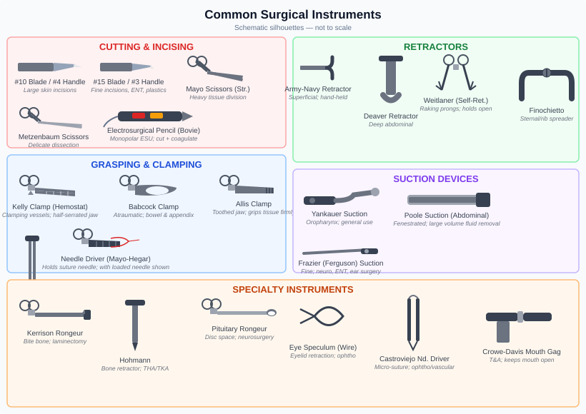

Chapter 6: Surgical Instrumentation¶
6.1 Instrument Classification by Function¶

Surgical instruments are grouped by what they do. A thorough understanding of these categories allows the scrub technologist to anticipate surgical needs and organize the sterile field logically.
Category 1: Cutting and Dissecting Instruments¶
These instruments divide tissue. They are among the sharpest items on the back table and demand careful handling.
Scalpel (Knife) The scalpel is the primary cutting instrument. It consists of a handle and a disposable blade.
Common handles: - #3 handle: standard; accepts blades 10, 11, 12, 15 - #4 handle: longer/heavier; accepts blades 20–25 - #7 handle: thin/long; accepts blades 10–15
Common blades: | Blade | Shape | Common Use | |-------|-------|-----------| | #10 | Large, curved | General skin incision | | #11 | Pointed/triangular | Stab incisions, abscess drainage | | #12 | Hook-shaped | ENT, specialized dissection | | #15 | Small, curved | Delicate dissection, pediatric | | #20–25 | Large curved | Abdominal, orthopedic |
Mounting and passing blades: Always mount and remove blades with a needle driver or hemostat — never with bare fingers. Pass the loaded scalpel handle in the neutral zone.
Scissors Scissors are used for cutting tissue, suture, and mesh.
| Scissors | Description | Use |
|---|---|---|
| Mayo scissors | Heavy; straight or curved | Cutting fascia, heavy suture |
| Metzenbaum scissors | Fine, curved or straight | Delicate tissue dissection |
| Iris scissors | Tiny, straight or curved | Ophthalmic, microsurgery |
| Bandage scissors | Angled blade to protect skin | Cutting dressings (non-sterile) |
| Suture scissors | Short-blade with blunt tips | Cutting suture on the field |
Rule: Never use tissue scissors to cut suture and never use suture scissors on tissue. Cutting suture dulls the blades quickly, degrading their performance on delicate tissue.
Electrosurgical Instruments While technically energized devices (covered in Chapter 8), active electrode tips — pencil tips, ball electrodes — are cutting/coagulating instruments managed on the sterile field.
Category 2: Grasping and Holding Instruments¶
These instruments hold or manipulate tissue and other materials.
Thumb (Tissue) Forceps Held like a pencil; spring-loaded; no locking mechanism. Available in multiple jaw configurations: | Forceps | Jaw Type | Use | |---------|----------|-----| | Adson | Toothed | Skin grasping | | Tissue (Standard) | 1×2 teeth | General tissue | | Russian | Rounded, serrated | Tissue grasping | | DeBakey | Fine serrations, atraumatic | Vascular; bowel | | Smooth (dressing) | No teeth | Dressings, packing |
Clamps (Hemostats and Occlusion Clamps) Ring-handled instruments with a ratchet lock; used to clamp vessels, pedicles, or tissue.
| Clamp | Description | Use |
|---|---|---|
| Mosquito hemostat | Very small; curved or straight | Small vessels, small tissue pedicles |
| Kelly hemostat | Medium; straight or curved | Medium vessels |
| Crile hemostat | Similar to Kelly; slightly longer jaw | General hemostasis |
| Kocher clamp | Heavy; toothed tip | Dense tissue, fascia |
| Allis clamp | Multiple interlocking teeth | Grasping tissue to be excised |
| Babcock clamp | Smooth, fenestrated jaw | Atraumatic bowel/tube grasping |
| Pennington clamp | Triangular fenestrated jaw | Rectal, bowel tissue |
| Sponge forceps (ring forceps) | Long ring handles, ring jaws | Holding sponges; skin prep |
Towel Clamps (Perforating and Non-Perforating) Secure drapes to each other or (if perforating) to the patient's skin. Non-perforating (Backhaus) clamps are standard for most draping.
Needle Holders Specifically designed to grip suture needles: | Holder | Description | Use | |--------|-------------|-----| | Mayo-Hegar | Heavy, standard length | General closure | | Crile-Wood | Similar to Mayo-Hegar | General use | | Webster | Fine; shorter | Delicate/plastic surgery | | Castroviejo | Spring-action; very fine | Ophthalmology, microsurgery |
Category 3: Retraction Instruments¶
Retractors expose the operative field by holding tissue out of the surgeon's line of view.
Hand-held Retractors | Retractor | Description | Use | |-----------|-------------|-----| | Army-Navy | Double-ended, S-curved | Skin and subcutaneous tissue | | Richardson | Hooked blade, various sizes | Abdominal wall, fascia | | Deaver | Curved, narrow blade | Deep abdominal retraction | | Ribbon (Malleable) | Flat, flexible, adjustable | Custom-shaped retraction | | Rake (Volkmann) | Multiple prong tips | Skin edges | | Vein retractor | Small right-angle blade | Vascular exposure | | Senn retractor | Double-ended: curved blade + rake | Superficial tissue |
Self-Retaining Retractors Hold themselves open without a hand-holder, freeing assistants for other tasks. | Retractor | Description | Use | |-----------|-------------|-----| | Weitlaner | Spring-loaded, sharp-tipped | Small incisions; orthopedic | | Gelpi | Spring-loaded; sharp self-retaining | Orthopedic, spinal | | Balfour | Frame with interchangeable blades | Abdominal retraction | | Bookwalter | Modular ring and blade system | Large abdominal/pelvic cases | | O'Sullivan-O'Connor | Ring retractor for pelvic cases | OB/GYN | | Cerebellar (Meyerding) | Spine retractor | Spinal surgery |
Category 4: Suction Instruments¶
Remove blood, fluid, and debris from the operative field. | Tip | Shape | Use | |-----|-------|-----| | Yankauer | Rigid, bulb tip | Oropharynx, general suctioning | | Frazier | Angled, narrow | Neurosurgery, ENT, small spaces | | Poole | Large barrel with perforated sleeve | Abdominal flooding | | Baron | Short, angled | Ear surgery |
Category 5: Visualization Instruments¶
Specula and Scopes | Instrument | Use | |-----------|-----| | Nasal speculum | Dilates nares for nasal examination/surgery | | Vaginal speculum | Dilates vaginal vault | | Ear speculum | Canal visualization | | Laparoscope | Camera inserted through trocar for MIS | | Arthroscope | Joint visualization | | Cystoscope | Bladder visualization |
6.2 Instrument Naming Conventions¶
Most instrument names follow one of these patterns: - Eponym: named after the person who designed it (e.g., Kelly, DeBakey, Allis, Deaver, Babcock) - Descriptive: describes the instrument's appearance or function (e.g., right-angle clamp, ribbon retractor, sponge forceps) - Combined: eponym + description (e.g., Crile hemostat, Mayo scissors)
Learning eponyms is a matter of repetition and context. Focus on function first — know what the instrument does — then match the name to the tool.
6.3 Passing Instruments¶
Passing instruments efficiently and safely is one of the most important practical skills of the scrub technologist.
Principles of Instrument Passing¶
- Anticipate: know the procedure; have the next instrument ready before it's requested
- Firm hand-off: place the instrument firmly in the surgeon's palm in a position of function — they should be able to use it immediately without repositioning
- Safe: sharps in the neutral zone; never palm-to-palm for knives or needles
- Silent communication: a well-timed hand-off without prompting builds trust and flow
Passing Specific Instrument Types¶
Clamps and scissors: Handle first, into the ring finger and thumb of the surgeon's dominant hand. Curved instruments should curve away from the surgeon.
Tissue forceps: Grasp the forceps near the box (pivot), place handles into surgeon's palm.
Scalpel: Place in neutral zone or, if neutral zone is not in use, handle-first with blade down and away.
Suture on needle holder: Needle loaded in needle holder at 2/3 down the needle; pass needle holder with suture tails draped away from the field; control the needle's free tip.
Retractors: Pass with the blade oriented toward the tissue to be retracted, handle toward the surgeon.
6.4 Surgical Counts¶
Surgical counts are a critical patient safety mechanism. A retained surgical item (RSI) — any instrument, sponge, or sharp left inside a patient — represents a serious preventable harm.
What Is Counted¶
- Soft goods: surgical sponges (laps, raytecs, tonsil balls, cottonoids/neuro patties)
- Sharps: hypodermic needles, suture needles, scalpel blades, electrosurgery tips, knife handles
- Instruments: all instruments on the back table and Mayo stand at the start of the case; any added during the case
When Counts Are Performed¶
- Initial count: before the procedure begins; establishes baseline for all items
- Closing count: when closure of a body cavity begins
- Final count: when skin closure begins
- Any time a count discrepancy is suspected
- Before and after adding any items to the field mid-case
Count Procedure¶
The scrub technologist and circulating nurse count together, simultaneously viewing each item: - Items are separated and counted one by one (not in stacks) - Sponges are opened and inspected for integrity - Counts are called out loud and confirmed by both parties - The circulator records the count on the count board or in the electronic record
Count Discrepancy¶
If the final count does not reconcile: 1. Recount all items on the field and in the room 2. Search the wound, under the drapes, in the suction canisters, and in the trash 3. If still unreconciled, obtain an intraoperative X-ray to rule out a retained item 4. Do not close until the discrepancy is resolved or an X-ray clears the cavity
All discrepancies must be documented and reported per institutional policy, regardless of whether the item is found.
Clinical Pearls¶
"Know what's on your field. At all times. If you can't account for it, find it."
- Keep your back table organized consistently. Moving things around between cases causes hesitation — hesitation in a crisis costs seconds.
- When handing a needle holder, always be aware of where the free needle tip is pointing.
- If a surgeon asks for an instrument you don't recognize, do not guess — ask for clarification. A wrong guess handed confidently can go somewhere it shouldn't.
- Read the preference card before every case. Surgeons have preferences because they matter.
Next: Chapter 7 — Sutures, Needles, and Wound Closure Devices